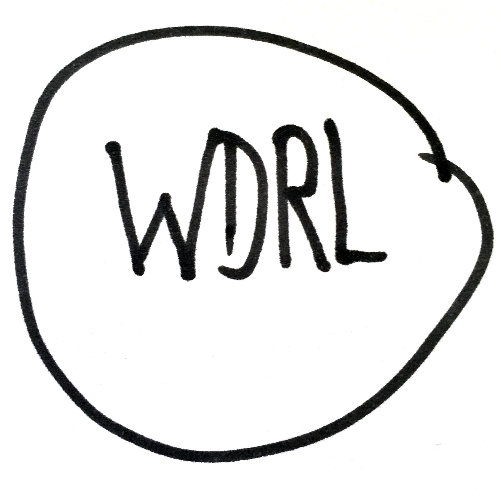
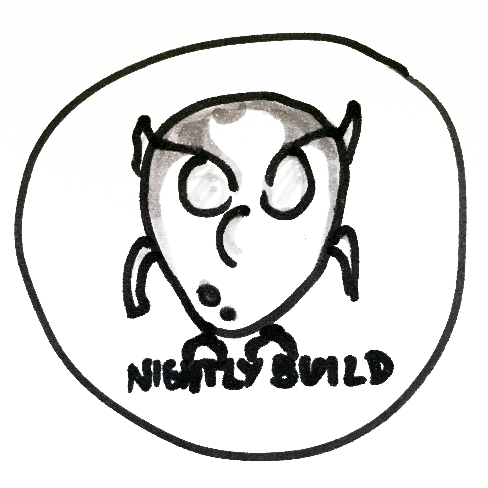
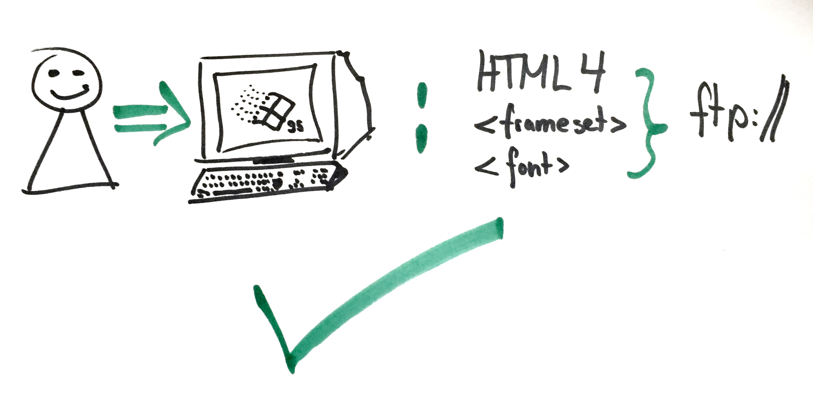
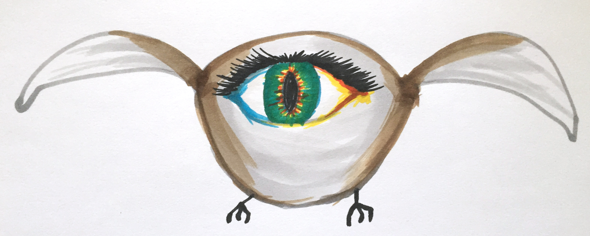

Deal with it! Anselm Hannemann
Hi, I’m Anselm!
Freelance front-end developer.


Seriously, I’m doing front-end work as many of you do as well, just maybe with a different focus.
I do the WDRL , a weekly newsletter for you to stay up to date and the nightlybuild conference.
When I was 13…

* When I was 13 I learned HTML from my best friend who was in an extra curriculum class in school. HTML4 was fresh and cool.
* We coded our first website with frames and such stuff, it’s easy to start and I learned the language HTML basically in 2 days
* The hardest thing was to understand how to make a website public. You know, FTP, get a free hosting server (arcor freemail address had that!), etc.
* This worked fine for a few years. There were things like ANT but it was over my head and I didn’t care. I knew gzip was important on the server but apart from that I did nothing else. I had HTML files, CSS files, JavaScript files. No minification, no concatenation (always one file anyway :D). Upload, finished. Not even git, maybe the only problem I had.
* Then came grunt. With grunt, workflow automatisation got easy. I understood it because it’s easy. It’s easy to write JS objects, adapt these configs. And I got stuck with it. I researched web performance more, optimized grunt workflows, and finallt had a project in which we had a git repository, available as module via bower, which only served our grunt config – and yes, the config for it was incredibly big and served basically all needs for a large-scaling front-end architecture (we were building a company website-framework to serve about 80 individual websites). We also wrote a Yeoman generator to build new modules.
* Then came gulp. Gulp superseeded Grunt and the first time I used it, it worked fine as well, very similar to Grunt. Only, I got into my next project and wrote a few new tasks to optimize things further. That was the point when I realized Gulp being very different. It’s async and it’s somehow human behavior that we’re not good at asynchronous handling. I guess it’s why it’s harder to understand and debug async operations than sequential. And due to Gulp’s piping the entry barrier is way higher to non-JavaScripters than Grunt’s.
* At some point I realized that I spend hours and days into building workflow automatisations instead of coding a real solution that helps the company, and users. I was annoyed and thought myself: Why is it so hard and why are we doing this?
* For my personal website I explored a "new way" I recently read about. Using npm scripts to automate simple tasks.
* In fact it was new for me but once I tried it out it felt right from the start. It was just a few lines of scripts in my package.json to have minfication, concatenation and some copy task.
* Only later I realized (for whatever reason before I didn’t) that it’s just using the CLI scripts as we could do for decades. Only, it runs with node scripts which is cool because that’s what most front-end tools are written in.
* From that moment I started building small projects only with npm, only using grunt or gulp when it’s a really large project. Then, npm can get a bit messy (although there are also ways to get around that).
* But this year I’ve built a super small website for an artist. It was a few lines of HTML, a few SVG, CSS and JavaScript.
* The artist had not much money but said, “Can you code it intially? I know some HTML to edit texts myself and adapt colors in CSS.”.
* Now, how the hell should that work?! I mean, we have a tooling workflow. How do I get this woman to go to the CLI, install node, do `npm install`, do `npm run build` and such stuff? No way.
* I realized that still we’re coding in our world. The barrier increased so much for beginners. I realized that I won’t be able to do any optimisation on that project except for… serving gzipped content on the server.
* I coded it, documented everything in the code and in an external README.txt (markdown formatted) and gave it to the client. She was happy, especially that I documented everything so well and she immediately knew what to change where.
* Result: I’m happy, the client is still.
* But is it a bad user experience? No. The site is small. I actually compared the delivered version with an optimized one and the result is: No real benefits. gzip does most, all other steps would’ve only saved bytes(!).
* Build carefully, serve your clients needs. Live pragmatism and be responsible. Remember, it’s not responsible to serve an React or Angular app that has 8.5MB and loads 30secs on a fiber connection. But it’s responsible to serve unminified code if it doesn’t make a real difference for the user but a huge difference to the client.
Every day there are new tools, frameworks, libraries.
It’s easy to feel behind.
Because you, like me, have a normal day to day job or even have a more regular job than I, because I really have a diverse freelance job switching between many topics each day. Don’t feel bad about it. You’re not alone, you’re part of the majority if you are a regular worker in a company. And we all want to have a life and deliver good work .
The Social Media “Bubble”
Every day we read on twitter what the awesome people we follow do. They share amazing work, articles and experiences. We admire them because they do awesome work, right?
But they’re just the ones who shout out loud. Don’t forget about all the others that do as good work but don’t tweet about it.
I’ve seen great developers and awesome code when I worked in some projects that could easily fill a Hackernews Top10 place. But people never wrote up and just did their fucking job.
But what happens when…
…people in the bubble don’t agree anymore?
…Angular is not cool anymore, and you should use React?
…you just learned unit tests with Mocha, now should use AVA?
Be cool and have a bird eye view on it.

If you have too much time and wanna play around with something new even if you don’t need it, go ahead. Try React, Broccoli, incremental DOM, Polymer, AVA, … etc. If not, watch it with some popcorn and concentrate on the important parts :
Collaboration Works.
Recently I was a TEDx Munich and there was a great, inspiring talk by Tamara Ben-Halim . She told the story about her great-grandmother needed to escape from Palestine. Knowing the story from her narrations, Tamara always wanted to know where her great-grandmother lived. She travelled into the unknown city and tried to figure it out on her own by the explanations she had. She found the street easily but with so many changed things over decades she couldn’t find out which house it was. On her last day she met two older men on the street and by luck they knew the family name. She left the country but a few weeks later got a mail from one of the men in which he described what building it was. In fact, she had stood in front of it, even made a picture of it but couldn’t know it was the one house she searched for. By collaborating, by asking strangers, she finally achieved what she wanted to know for years. I found this story very touching. It’s not only showing how important communication is but also how powerful human beings can be if we work together, ignoring fictional borders in our heads. Because in fact, one of the men who helped her was an Isreali, but it didn’t matter to anyone. They’re just human beings as you and me and want to live a meaningful, peaceful life. If we do more together, we can make things easier.
Keep track of the relevant things
Well, the truth is:
Read summaries
Wait ~3 months before digging into a new tool
The few surviving may be of some relevance
Go to conferences & meetups
What’s your (team) knowledge
Agree on a tech stack that everyone understands.
Take some time for project management
Take more time for a technical concept and breakdown of the project
Plan in Components, plan modular
Split your project plan into separate chunks.
Easily reach small goals.
Stay motivated.
Single out detail issues before coding.
Create a more modular, cleaner codebase.
Plan your toolstack
Now, seeing what you want to achieve and what you need, search the right tools for the job.
Start work, finish early, relaxed.
Thank you!
Have fun and enjoy the event!